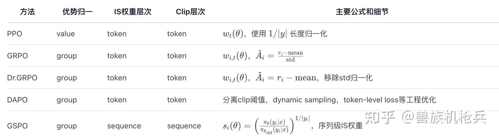

算法 #
| 算法 | 核心思想 | 是否使用评论家 | 主要创新点 | 关键优势 | 目标问题 |
|---|---|---|---|---|---|
| PPO | 将策略更新限制在信任区域内以稳定学习。 | 是 | 截断代理目标函数。 | 稳定、鲁棒。 | 通用RL对齐(RLHF)。 |
| DPO | 通过分类损失直接在偏好对上优化策略。 | 否 | 将奖励重参数化为最优策略的函数。 | 简洁、稳定、无RM/RL循环。 | 通用RL对齐(RLHF)。 |
| GRPO | 使用一组样本的奖励统计量来估计优势。 | 否 | 基于组的优势估计。 | 内存/计算效率高。 | 资源密集型的推理任务。 |
| DAPO | 系统性地应用一套技术来解决大规模RL问题。 | 否 | Clip-Higher、动态采样等的组合。 | 解决特定的训练病理问题。 | 规模化训练的可扩展性和稳定性。 |
| Dr. GRPO | 从GRPO目标中移除已识别的长度和难度偏差。 | 否 | 无偏的损失函数形式。 | token效率更高，偏差更小。 | GRPO中的长度/难度偏差。 |
| GSPO | 在序列级别执行重要性采样和截断。 | 否 | 序列级重要性采样。 | 极高的稳定性，尤其对MoE模型。 | token级更新的不稳定性。 |
| GMPO | 使用奖励的几何平均值以对异常值保持鲁棒。 | 否 | 目标函数中使用几何平均。 | 对异常奖励值的鲁棒性。 | 奖励异常值导致的不稳定。 |
| GFPO | 在更新前根据行为指标过滤采样的轨迹。 | 否 | 对轨迹进行拒绝采样。 | 生成简洁、高效的回答。 | 回答长度膨胀问题。 |
| LitePPO | 组合归一化和损失聚合的最佳实践。 | 否 | 对现有技术的有原则配置。 | 以最小的复杂性实现高性能。 | RL流程中的过度工程化。 |
演化脉络 #
PPO：token-level，价值函数依赖，clip在token上。 GRPO：引入 group 原则，reward group内归一，无需value，但clip/S依然是token-level，variance大。 Dr.GRPO：修正GRPO的长度和方差归一偏置，不再token归一。 DAPO：进一步吸收众多工程技巧（Clip-Higher、Dynamic Sampling等）来缓解大模型RL的瓶颈，token-level范式不变。 GSPO：范式跃迁，off-policy与clip全部sequence-level，variance低，性能和算法纯粹性最佳，最新Qwen3 RL实践基础。
核心公式对照表 #

参考 #
PPO、DPO、GRPO及其变体（Dr. GRPO、DAPO、GSPO、GMPO、GFPO、LitePPO）策略优化算法综述 PO 系列工作解析 (一)：从PPO到GRPO/DAPO/Dr.GRPO再到GSPO的演化